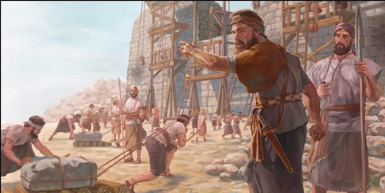
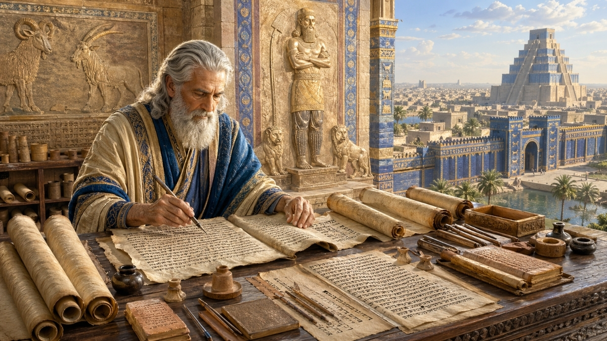

Bible Study → Men's Breakfast
Men's Breakfast — CMBC
Monthly large-group men's ministry at Cedar Mill Bible Church. Three speakers, table discussion rounds, ~30+ men. Co-led with Pastor Austin. Paul handles session planning, print materials, and one of the three speaker slots.
Current series: What is a Man?
Session Format
Frequency
Monthly
Total Time
~65 min
Attendance
30+ men
Co-Lead
Pastor Austin
- Speaker 1 (10 min) → Table Discussion Round 1 (10 min)
- Speaker 2 (10 min) → Table Discussion Round 2 (10 min)
- Speaker 3 (10 min) → Table Discussion Round 3 (10 min)
- Close with Austin (5 min)
- ~5 men per table · sweet spot is 1.5 questions per round (one main + optional follow-up)
Print Materials Format
- Speaker notes: 8.5×14 · keyword/prompt style · black header bars
- Table questions: 8.5×11 · one card per round · clean bordered layout
- Scripture reference: 8.5×11 · all passages with text + summary
- All saved as HTML · printed to PDF via browser
All session materials are generated by Claude and saved locally. To regenerate print materials for a session, use the Daniel at Work reference as a template (
memory/reference_daniel_at_work_outline.md).
Session Archive
Newest first — click any topic for full session materials
Nehemiah: Innocent as a Dove, Wise as a Serpent
August 2026
Done
How does a man stay innocent as a dove AND wise as a serpent? Jehoshaphat and Ahab each show half the picture; Nehemiah holds both — facing wolves outside the walls (Sanballat, Tobiah) and wolves within his own people (the nobles exploiting the poor). Includes a companion slide deck Paul built and presented live.
Abraham: Growing in Trust — A Lifetime of Walking with God
July 2026
Done
How does a man learn to walk with God? Abraham is the model — not because he was great, but because he kept walking. Three sections trace his story from the call in Ur through Isaac's birth, closing on the sacrifice of Isaac. Light turnout due to the July 4th weekend, still worth meeting.

Daniel: Keeping Your Integrity in a Difficult Workplace
June 2026
Austin Led
Being a Godly worker in a difficult workplace — Daniel's model across six chapters of workplace crises. Three sections: Daniel's context and the A–E toolkit, black-and-white situations (life on the line), and morally gray situations (navigating carefully). Paul not present — family trip to Montana.
Jesus: The Lion and the Lamb
May 2026
Done
What does it mean to be a man? Jesus is both Lion and Lamb — bold, confrontational, and powerful AND gentle, sacrificial, and compassionate. Three sections: what Jesus looks like to you, the Lion and Lamb in Jesus's ministry, and what it looks like for us (Paul and Timothy as case studies).